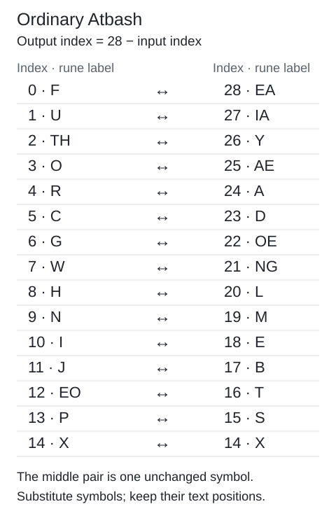

Atbash and shifted Atbash
Reverse the rune alphabet, with an extra shift where the control specifies one.
On this page
The mapping
Ordinary Atbash gives p = 28 − c. Index 0 maps to 28, 1 to 27, and 14 to itself. Applying it twice returns the original index. It reverses the alphabet mapping, not rune order within a line.
The warning uses ordinary Atbash. The first koan, LP1-06–09, uses p = (28 − c + 3) mod 29. For c = 0 this produces index 2, because 31 mod 29 = 2.
Each pair’s indices add to 28. The middle rune maps to itself. These examples show symbol substitutions, not a reversal of the order of text.
Follow the first runes
Use the zero-based rune indices, not the Gematria Primus prime values. Each input rune is replaced in its existing position. The first six runes of the warning demonstrate the whole ordinary mapping:
| Input rune | Index c | 28 − c | Output label |
|---|---|---|---|
| ᚱ R | 4 | 24 | A |
| ᛝ NG | 21 | 7 | W |
| ᚱ R | 4 | 24 | A |
| ᚪ A | 24 | 4 | R |
| ᛗ M | 19 | 9 | N |
| ᚹ W | 7 | 21 | NG |
With the source separator retained, these produce A-WARNNG. The final NG is one rune label, not two separately decoded symbols. The contextual heading “A warning” is a reading decision; adding an I to the cipher output would change the literal result. Compare the complete warning and the transliteration conventions.
Reverse, then add the shift
The first koan adds 3 after reversing the alphabet. Its first five indices are 7, 26, 28, 7, 22. The ordinary reversal gives 21, 2, 0, 21, 6; adding 3 gives 24, 5, 3, 24, 9. Those labels read A-COAN with the original separator. See the complete first koan.
- Read W: input index 7.
- Reverse: 28 − 7 = 21.
- Add 3: 21 + 3 = 24.
- Read A: output index 24.
If the result passes 28, wrap it using modulo 29. For input 0, the intermediate result 31 wraps to 2.
Changing the order changes the cipher. Adding 3 to input 7 first, then reversing, gives 28 − (7 + 3) = 18, or E—not A. Record the formula rather than only saying “Atbash plus three.” The documented convention is (28 − c + 3) % 29.
Why applying it twice works
Ordinary Atbash undoes itself because 28 − (28 − c) = c. The shifted version also undoes itself when the same shift is used both times. If f(c) = (28 − c + s) mod 29, then the two copies of 28 and the two copies of s cancel in f(f(c)), leaving c modulo 29. This makes a useful implementation check, but does not by itself show that a page uses the cipher.
Some symbols map to themselves. Ordinary Atbash leaves index 14 (X) unchanged. The koan’s shift of 3 leaves index 1 (U) unchanged: (28 − 1 + 3) mod 29 = 1. These are normal applications of the formula, not instructions to skip a rune. In a reproduction trace their copied field remains false. Compare the explicitly recorded exceptions in Vigenère.
The complete ordinary mapping

This chart covers ordinary Atbash only. The first koan’s additional shift changes its pairs. To redraw the chart from the published alphabet, use the reference-data bundle and run:
python scripts/plot_atbash_pairs.py --output my-atbash-pairs.svgThe chart script uses Python’s standard library, reads data/index.json, and refuses to replace an existing output. It makes no network or AI request.
Try the mapping without any files
This Python 3 example checks all 29 input indices for both documented variants, then prints the two heading fragments. No package installation or manuscript download is needed for this small arithmetic check.
labels = "F U TH O R C G W H N I J EO P X S T B E M L NG OE D A AE Y IA EA".split()
def atbash(c, shift=0):
return (28 - c + shift) % 29
for shift in (0, 3):
assert sorted(atbash(c, shift) for c in range(29)) == list(range(29))
assert all(atbash(atbash(c, shift), shift) == c for c in range(29))
warning = [4, 21, 4, 24, 19, 7]
koan = [7, 26, 28, 7, 22]
print(" ".join(labels[atbash(c)] for c in warning))
print(" ".join(labels[atbash(c, 3)] for c in koan))
# A W A R N NG
# A C O A NThe spaces here separate output rune labels so that the mapping is easy to inspect. To retain the manuscript’s punctuation and line breaks, use the full reproduction script below.
How to replicate
python scripts/reproduce_reading.py warning
python scripts/reproduce_reading.py first-koan
python scripts/reproduce_reading.py warning --traceThe trace exposes each rune’s operation and result. Punctuation remains in place. Compare with the exact controls and known readings.
What passing a control means
A matching output confirms that your convention reproduces that passage. It does not establish that an unsolved page uses Atbash. Keep ordinary and shifted variants distinct in a test record.
Sources and verification
Pinned historical walkthrough. Recipes reproduce published controls; they are not new solutions. Local computational verification: 19 October 2026.
Manuscript pages discussed
LP1-01 · LP1-06 · LP1-07 · LP1-08 · LP1-09